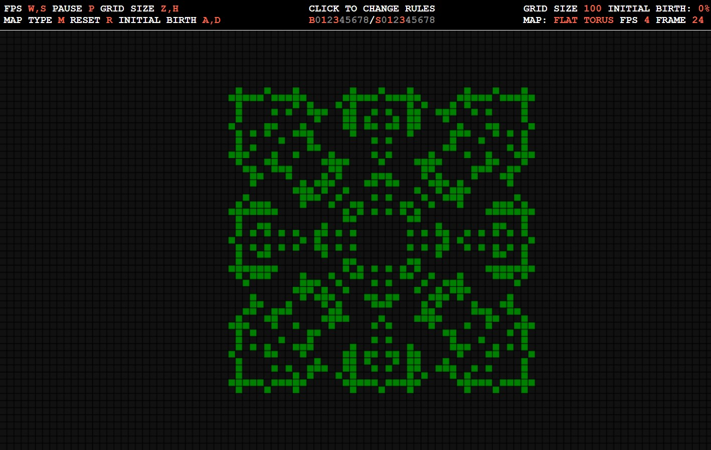
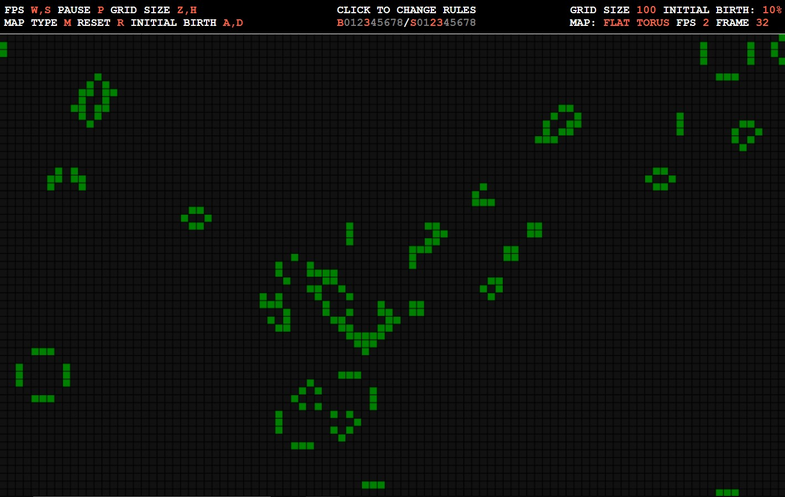

TL ; DR
Ce petit projet est un Automate Cellulaire paramétrable.
Astuce:
- Mettez sur pause en appuyant sur "P", puis maintenez "A" pour régler le nombre de naissances initiales à 0.
- Changez les règles en B: 1,3 et S: 1,3
- Réinitialisez la grille en appuyant sur "R", cliquez sur une cellule, puis appuyez sur "P" pour redémarrer l'automate.
- Admirez le mandala animé!

